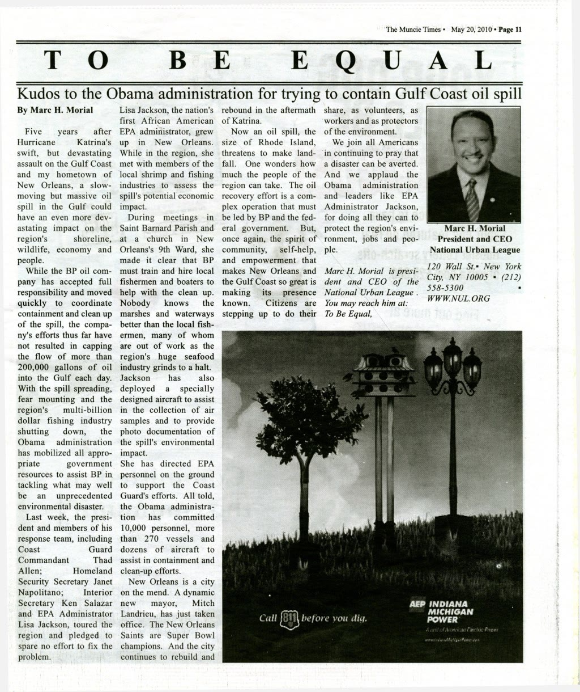

HN-920: Gulf oil-spill columnist uses a then-current flow estimate
HN-920 · May 20, 2010 · Nature, Wildlife & Environment > Pollution, Contamination & Environmental Damage > Water contamination

page image (archive tiles)Recorded finding
Deepwater Horizon 14 May 2010 Washington Post contrasts 5,000 vs 26,000 barrels/day; Los Angeles Times reports scientist's rate higher than government 5,000.
Discovery narrative
Source: Muncie Times, p. 11 — original Marc Morial column; NOAA's spill assessment.
Report: Morial warned of prolonged Gulf Coast environmental and economic damage while saying the well had yet to be capped and repeating an early estimate of over 200,000 gallons per day.
Assessment: Contemporaneous concern and provisional flow-rate reporting, not a final release calculation. NOAA subsequently assessed approximately 134 million gallons over 87 days after the April 20 disaster that killed eleven workers.
Curated audit flag
Class: Printed differences (V)
Recorded difference/concern: Deepwater Horizon 14 May 2010 Washington Post contrasts 5,000 vs 26,000 barrels/day; Los Angeles Times reports scientist's rate higher than government 5,000.
Assessment: Contemporaneous methodological disagreement; both were preliminary, later estimates distinct.
Source links: https://www.washingtonpost.com/archive/national/2010/05/14/5000-or-26000-barrels-a-day-size-of-spill-a-guesstimate/23285c90-a414-43de-9a17-6e81fdd1a429/ https://www.latimes.com/archives/la-xpm-2010-may-14-la-na-oil-spill-measure-20100514-story.html
Original archive images (1)
Authentic images retrieved from Hoosier State Chronicles (Indiana State Library). Article crops are located using the archive's own OCR word coordinates and rendered at native crop resolution; article clips are assembled from the archive's own article-block images; page images marked "archive tiles" are stitched from the archive's own tiled page service at its 256-px tile cap; page images marked "issue PDF" are single pages rasterised from the archive's own issue PDF, with the page chosen by matching the headline against the PDF's text layer; page scans are reduced-size access renditions. No images were generated, mocked, or retouched.

Hoosier State Chronicles (Indiana State Library)
Open larger view · Archive viewer (full resolution)
Source acquisition
Status: Archive images acquired
Authentic archive-owned image renditions were retrieved for this record and are displayed above. The source-acquisition manifest preserves the original pre-acquisition feasibility assessment.
Original seed
URL (preserved verbatim): https://newspapers.library.in.gov/?a=d&d=BALLMT20100520-01.1.11
Saved research report: Historical_Newspaper_Event_Research_903-927_2026-10-23.md
Evidence note: A newspaper report means a historical publication made a claim; it does not establish that claim as fact. Contemporary reporting is separated from later scholarly context and our own assessment.